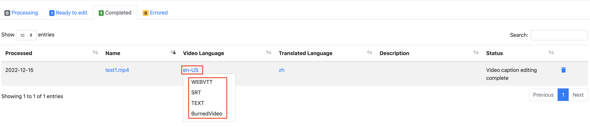

Automated deployment
Before you launch the solution, review the architecture, supported regions, and other considerations discussed in this guide. Follow the step-by-step instructions in this section to configure and deploy the solution into your account.
Time to deploy: Approximately 10 minutes
Deployment overview
Use the following steps to deploy this solution on AWS.
- step 1：Launch the AWS CloudFormation template into your AWS account.
- Launch CloudFormation tempalte in AWS China Regions
- Launch CloudFormation template in AWS Standard Regions
- step 2：Access the web interface
- step 3：Upload videos and perform operations related to video captions
Step 1: Launch the AWS CloudFormation template
This automatic AWS CloudFormation template deploys the solution in AWS.
Launch CloudFormation tempalte in AWS China Regions
Prerequisites
- Make sure a domain registered by ICP is available. Because the CloudFront address in AWS China Regions cannot be accessed directly, this domain name will be used as a CNAME to point to the CloudFront address created after the solution is deployed, and you can access the solution through this domain.
- Make sure a domain hosting zone is available. If you haven’t created a hosted zone, please refer toUse hosted zone.
Launch Amazon CloudFormation template
-
Log in to the AWS management console, select AWS China (Beijing) Region operated by Sinnet or AWS China (Ningxia) Region operated by NWCD to launch AWS CloudFormation template.
-
The template will be launched in the default region after you log in to the console. Please select from the region drop-down list in the console navigation bar to switch to other regions if you need to change the region.
-
On the Create stack page, confirm that the correct template URL is displayed in the Amazon S3 URL text box, and then choose Next.
-
On the Specify stack details page, assign a unique name in your account that meets the naming requirements for your solution stack.
-
In the Parameters section, view the parameters of the solution template and modify as needed, and then choose Next.
| Parameter Name | Default Value | Description |
|---|---|---|
| APIKey | N/A | Enter the authentication information required to log in to the web interface after the deployment |
| TranscribeLanguage | zh-CN | Select the default caption processing language. Currently, it supports en-AU, en-US, en-GB, es-US, en-IN, de-DE, hi-IN,pt-BR, fr-CA, fr-FR, it-IT, ta-IN, te-IN, zh-CN, ja-JP, and ko-KR. Refer to Amazon Transcribe to learn more about supported language and language code. |
-
On the Configure stack options page, choose Next.
-
On the Review page, review and confirm the settings. Check the box acknowledging that the tempalte creates AWS Identity and Access Management (IAM) resources.
-
Choose Create stack to deploy the stack.
You can check the status of the stack in the Status column of the AWS CloudFormation console. You should receive a CREATE_COMPLETE status in approximately 10 minutes.
Create records on Route53 to resolve domain names
-
Log in to Route53 Console, and choose Create record.
-
Enter the required subdomain in Record name text box. The suffix is the top-level domain registered by ICP, for example, video-transctiber.ch.test.com.
-
Choose Record type as CNAME.
-
Enter the CloudFront URL into Value text box, not including https://. For example: xxxxxx.cloudfront.cn.
You can get CloudFront URL from the solution AWS CloudFormation stack Outputs page.
- Choose Create records.
Configure CNAME in the CloudFront
-
Log in to CloudFront Console，and choose Distributions of this solution.
-
Choose "Edit" to enter the Edit settings.
-
Choose Add item, then enter domain name in Alternate domain name (CNAME) text box. For example, video-transctiber.ch.test.com。
-
Choose Save changes. The configuration take effect upon the automatic CloudFront deployment.
Launch CloudFormation tempalte in AWS Standard Regions
Launch AWS CloudFormation template
-
Log in to the AWS management console, select Global region to to launch AWS CloudFormation template.
-
The template will be launched in the default region after you log in to the console. Please select from the region drop-down list in the console navigation bar to switch to other regions if you need to change the region.
-
On the Create stack page, confirm that the correct template URL is displayed in the Amazon S3 URL text box, and then select Next.
-
On the Specify stack details page, assign a unique name in your account that meets the naming requirements for your solution stack.
-
In the Parameters section, view the parameters of the solution template and modify as needed, and then select Next.
| Parameter Name | Default Value | Description |
|---|---|---|
| APIKey | N/A | Enter the authentication information required to log in to the web interface after the deployment |
| TranscribeLanguage | zh-CN | Select the default caption processing language. Currently, it supports en-AU、en-US、en-GB、es-US、en-IN、de-DE、hi-IN、pt-BR、fr-CA、fr-FR、it-IT、ta-IN、te-IN、zh-CN、ja-JP、ko-KR. Refer to Amazon Transcribe to learn more about supported language and language code. |
-
On the Configure stack options page, select Next.
-
On the Review page, Check the box acknowledging that the tempalte creates AWS Identity and Access Management (IAM) resources.
-
Choose Create stack to deploy the stack.
You can check the status of the stack in the Status column of the AWS CloudFormation console. You should receive a CREATE_COMPLETE status in approximately 10 minutes.
Step 2: Access the web interface
After the stack is successfully created, you can view the authentication information (APIKey) required to access the web interface and the created CloudFront URL (ConsoleUrl) on the Outputs tab of AWS CloudFormation stack.
Depending on the region where you create the stack, you can choose to access the web interface from the AWS China Regions or the AWS Standard Regions.
Access from AWS China Regions
-
Enter https://
in the address bar of the browser. For example, the domain is video-transcriber.ch.test.com. -
Select Enter API Key, and enter the authentication information in the pop-up input box.
Access from AWS Standard Regions
-
Enter the CloudFront URL in the address bar of the browser.
-
Select Enter API Key, and enter the authentication information in the pop-up input box.
Step 3: Upload videos and perform operations related to video captions
In the web interface, select Videos at the top of the page. The page displays four tabs, corresponding to the different status of videos:
- Videos being processed
- Videos ready for editing
- Videos marked as editing completed
- Videos with errors during processing

Upload video
You can upload videos without captions for processing.
-
On the Videos page, select Upload videos....
-
Select the video, then select Open.
-
Select the video language, and then choose Start. The system will start uploading the video and automatically process and generate captions.
Firstly, the video is displayed on the Processing tab, and after the captions are generated, the video will be displayed on the Ready to edit tab.
Proofread and edit captions
You can proofread and edit the video captions.
-
On the Videos page, select the Ready to edit tab.
-
Select the language link from the Video Language column to enter the captions editing page. The functions include:
- Play the video content paragraph by paragraph to proofread the captions.
- Modify the captions.
- Merge or split captions parapraphs.
Translate captions
You can translate the video captions, and then proofread and edit translated captions. Note: Currently, this feature is only supported by the deployment in AWS Standard Regions.
-
On the captions editing page, select Translate to.
-
After selecting the target language in the drop-down list, the system will translate the captions into the target language. After the translation is completed, you can also proofread and edit the translated captions.


Burn captions into the video
You can burn the generated captions into the video to create the video with captions.
-
On the Videos page, select the Ready to edit tab.
-
Select the language link from the Video Language column to enter the captions editing page.
-
Select Burn in。
Download captions or video with captions
After the captions or videos with captions are generated, you can download them directly:
-
If the video is in the editing status, select the video and the corresponding language to enter the video editing page to download.

-
If the video is in the completed status, you can directly download the captions or videos in the corresponding language of the video on the Completed tab of the Videos page. 